The Challenge
Goals
Different travelers. A shared need for clarity
Research Revealed Insights
Designing the User Experience
Three personas emerged
Exploring the Solution Space
Opportunity Maps
Key Insights and Opportunities
Low-Fi: Testing Different Directions
Mid-Fi: Narrowing the Experience
Establishing an Approachable Visual Identity
From Research to MVP Prototype
Point.ly
Scattered rewards Travelers accumulate points across credit cards, airlines, and hotels without a clear view of what they can unlock together.
The Strategic Optimizer Knows the system and works to maximize value.
The Aspirational Expert Understands the basics and wants value, but needs guidance.
The Casual Redeemer Uses points sporadically and prioritizes ease.
Point.ly began as a startup concept from a United Airlines manager who wanted to give travelers one view of their rewards. Travelers face three problems:
I interviewed 10 travelers to understand how they managed rewards, evaluated redemption value, and navigated decisions around transfers and group travel.
Turning fragmented loyalty points into new travel possibilities
UX@Berkeley project team
Finding the best redemption requires expertise Comparing cash, points, transfer partners, and booking portals means navigating different values, rules, and systems.
Groups can’t pool rewards Friends may have significant rewards collectively, but few tools show what becomes possible when their points are considered together.
Interviews
Insight
Research
Design
Retrospective
01 /
METHODOLOGY
Working MVP
DELIVERABLE
8 months + one day hackathon
TIMELINE
10 User Interviews Competitive Analysis Product Strategy PRD Development Prototyping Usability Testing
METHODS
Figma Cursor Claude Gemini
TOOLS
UX research Prototyping Visual Identity
MY CONTRIBUTION


One view of all rewards
Easy booking comparisons
Certainty of best value
SIMPLIFY
SIMPLIFY
CLARIFY
BUILD CONFIDENCE

“The bank portals feel like Expedia from 2010. It’s hard to know if I’m getting a good deal.”
“I want to plan trips with friends, but it’s so hard to coordinate and share options together.”
Isa Tech Worker, 30s
Afsaneh Professional 50s
“I want a single view of all my points so I don’t have to log into multiple accounts.”
Daniel Student, 20s
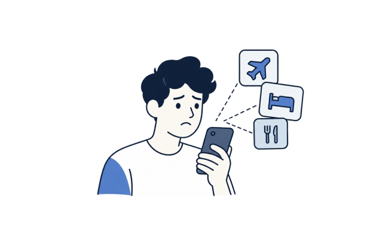
Jasmine Professional, 30s
“It’s hard to understand the real value of a points transfer — will I actually save money?”
Users did not necessarily need more ways to earn points. They needed help understanding the value already sitting in their wallets.
We analyzed existing rewards platforms to understand competitors’ unique differentiating features
We mapped each competitors’ features and user flows to identify strengths, friction points, and opportunities
Guided by our research, we quickly explored multiple concepts, including a Chrome extension, centralized rewards wallet, AI trip planning, itinerary comparison, and personalized points recommendations.
We prioritized the concepts that most directly addressed our research findings: consolidating rewards, simplifying comparisons, and making redemption opportunities actionable. Broader ideas that moved beyond these core needs were deprioritized.
I developed Point.ly’s visual identity to make the complexity of credit card points feel clear and approachable, balancing a friendly personality with the credibility of a financial tool.
We translated our research into a high-fidelity MVP prototype focused on consolidating rewards, comparing redemption options, and guiding travelers toward booking. The project remained at the prototype stage.
Broad multi-program search for quickly finding award availability.
Flight and hotel award search with strong free tools.
Guided award search with step-by-step booking support.
Hotel-focused award availability and redemption alerts.
Centralized tracking for points balances and expirations.
Flexible award search with filters and trend data.
Educational content, points valuations, and credit-card guidance.
Powerful, fast award search designed for experienced users.
Savvy travelers knew the transfer partners and redemption tricks. Everyone else had the same options but no easy way to find them.
Instead of a flat “not enough points,” provide a list of creative ways to close the gap, such as current promos and affiliated points programs.
For people planning together, looking at combined resources rather than individual balances could open travel options
Knowing you have 80,000 points is meaningless unless you know what they can buy and whether transferring is worth it.
Insight: Expertise created an uneven playing field
Opportunity: Provide ideas to close points gaps fast
Opportunity: Suggest ways to pool rewards for group travel
Insight: Points mean nothing without context

Hotel-for-points booking (legacy brand; now part of Rocketmiles).
Hotel-for-points booking (legacy brand; now part of Rocketmiles).
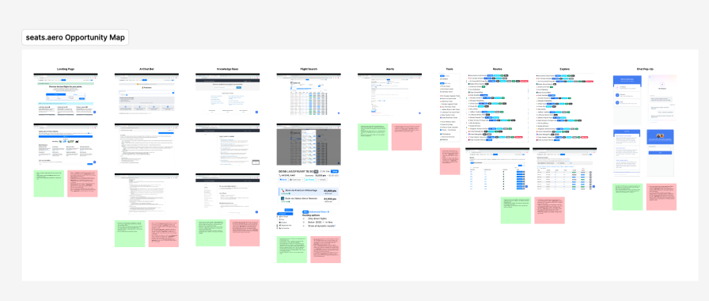
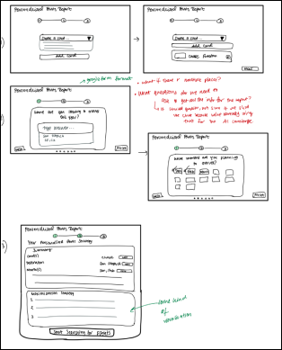
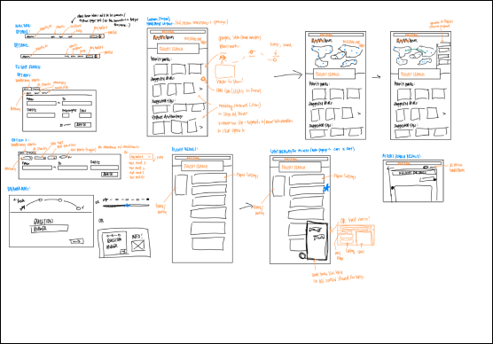

HEADS
BUTTONS
BODY
FCFCF8
DE8E5C
23395A
BECDD6
D9564D
4E76B6
40B3FC
Primary palette
Typography
Secondary Palette
Poppins Bold
Poppins Medium
Inter Regular Inter Regular Italic Inter Medium Inter Medium Italic Inter Bold Inter Bold Italic
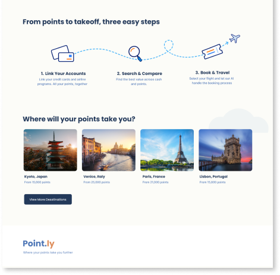
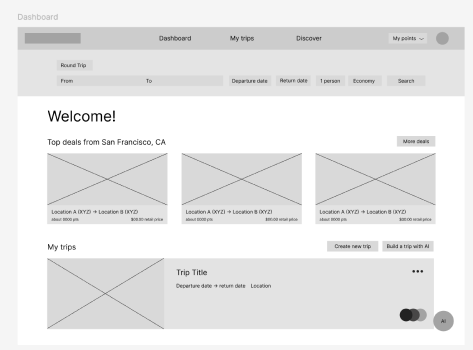
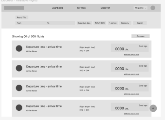
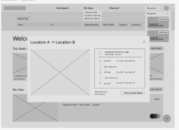
KIANA GEORGE / UX DESIGN + INSIGHTS
ABOUT
RESUME
CONTACT
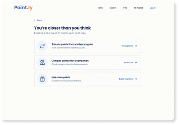
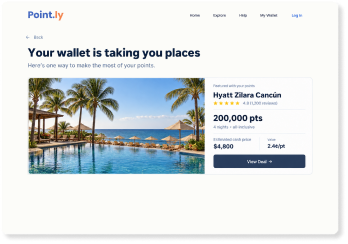
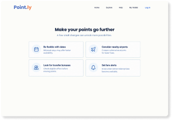
What I Learned
Reflection

Interviewing travelers with different habits and levels of points experience taught me that people can approach the same problem differently but still need similar things from a product. At the hackathon, I turned our findings into a PRD, used AI coding tools to build a working prototype, and tested it with users. This helped me connect what I heard in interviews to specific choices about how the product should work. The biggest lesson came from working through the full process: listening to a full spectrum of user experiences, making sense of what I heard, building, testing, and improving the design based on feedback.
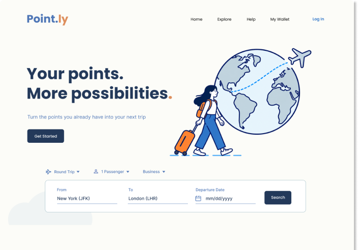